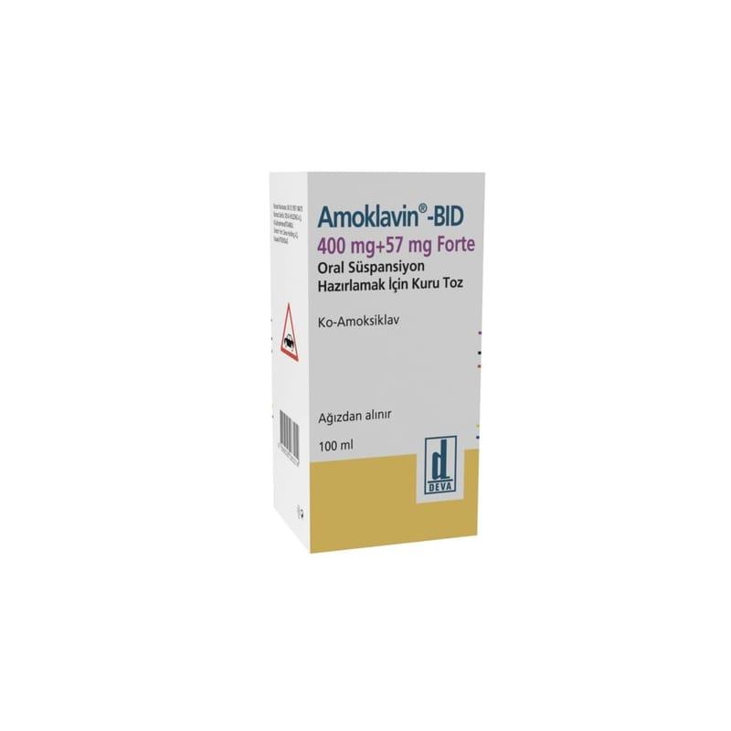

Amoklavin BID 400 mg + 57 mg Forte Oral Süspansiyon Hazırlamak İçin Kuru Toz, 70 ml

Ne için kullanılır
KT · Bölüm 1AMOKLAVİN-BID, enfeksiyonların tedavisinde kullanılan bir antibiyotiktir ve enfeksiyona neden olan bakterileri öldürerek işlev görür. Amoksisilin (amoksisilin trihidrat olarak) adı verilen bir penisilin ve amoksisilinin inaktive olmasını engelleyerek işlev gören klavulanik asit (potasyum klavulanat olarak) olmak üzere iki etkin bileşen içerir. Amoksisilin trihidrat sığır, koyun veya keçi sütünden üretilmektedir.
AMOKLAVİN-BID, sulandırıldığında 35 ml, 70 ml, 100 ml veya 140 ml süspansiyon elde edilen kuru toz halinde, 35 ml için, plastik pilver proof kapaklı; 70 ml, 100 ml ve 140 ml için, 28/16 mm PE/PP çocuk emniyetli plastik kapaklı bal renkli cam şişelerde bulunmaktadır. Beraberinde 35 ml’lik ambalaj için 4,2 ml’lik uygulama enjektörü; 70 ml, 100 ml ve 140 ml’lik ambalajlar için 5 ml’lik bir adet kaşık bulunur.
AMOKLAVİN-BID, aşağıdaki durumlarda duyarlı organizmaların neden olduğu bakteriyel enfeksiyonların tedavisinde kullanılır: Tekrarlayan bademcik iltihabı, bakterilerin neden olduğu sinüzit, akut orta kulak iltihabı gibi üst solunum yolu enfeksiyonları Kronik bronşitin akut alevlenmeleri, akciğer iltihabı gibi alt solunum yolu enfeksiyonları İdrar yolu iltihabı, üretra iltihabı, böbreklerin bakteriyel iltihabı, kadın üreme sistemi (genital sistem) enfeksiyonları, bel soğukluğu (gonore) gibi üreme organları ve idrar yolları ile ilgili enfeksiyonlar Bağ dokusu iltihabı (selülit), hayvan ısırmaları gibi deri ve yumuşak doku enfeksiyonları Diş apseleri gibi diş ve diş eti ile ilgili enfeksiyonlar Kemik ve eklem enfeksiyonları (osteomiyelit gibi)